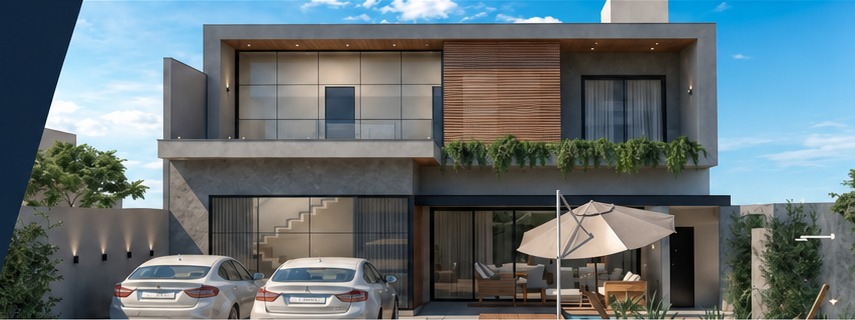
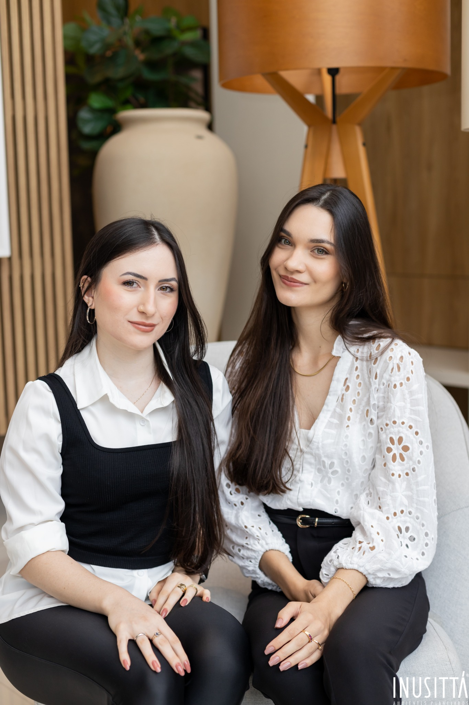
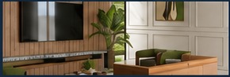
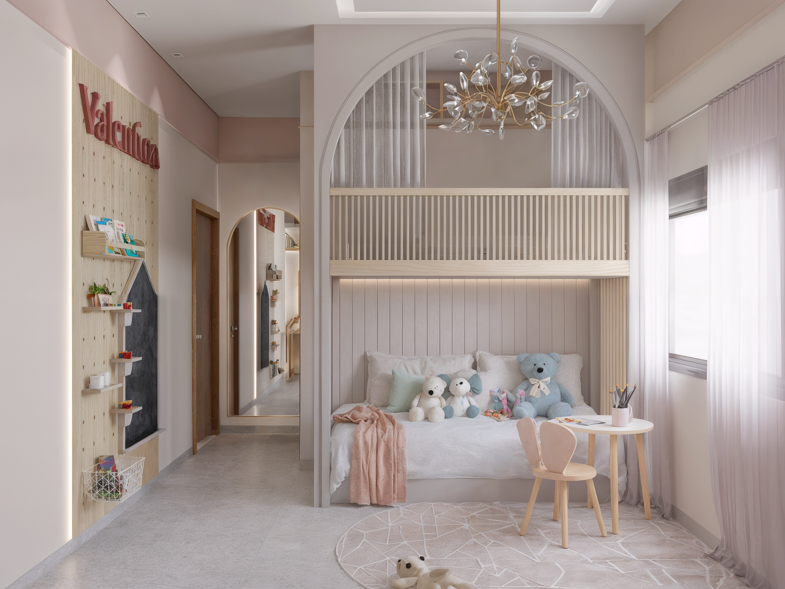
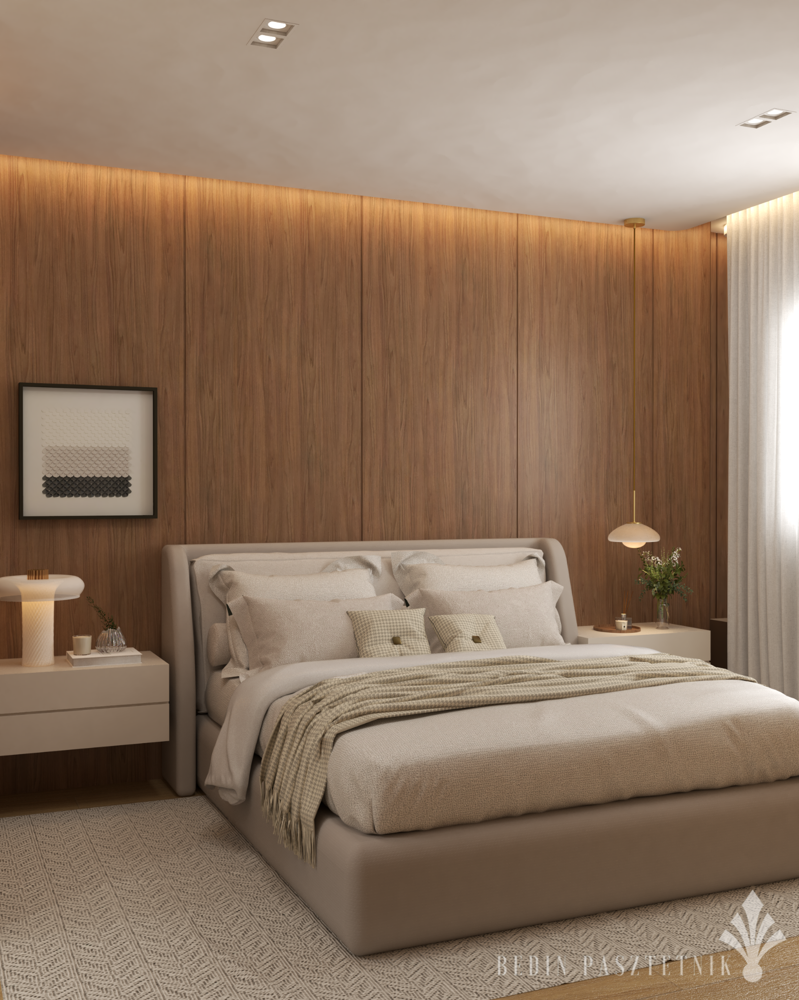
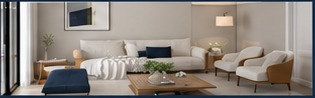

Na Bedin Pasztetnik, criamos interiores que unem estética, funcionalidade e a sua essência. Projetos personalizados para transformar espaços em experiências.
CONHEÇA NOSSO TRABALHO →

Somos a Bedin Pasztetnik, um escritório de arquitetura de interiores que acredita no poder dos detalhes. Unimos criatividade, técnica e sensibilidade para criar ambientes que refletem quem você é e como você vive.
SAIBA MAIS →"Interiores bem planejados melhoram a rotina, inspiram e acolhem."
Conforto, funcionalidade e personalidade em cada detalhe.
Ambientes que valorizam sua marca e o seu negócio.
Curadoria de móveis, cores e elementos que fazem a diferença.
Do projeto à entrega, com total cuidado e alinhamento.



